// fpga · esp32 · digital pet
Blinkit
A tiny digital pet with moods, sounds, and random genes. I'm building him twice: first in pure hardware logic on an FPGA for my class final project, then as a portable ESP32 keychain with a touch screen and Bluetooth friends.

PART 1 · class final project · demo December 2026
The FPGA version
Built entirely in Verilog on a Digilent Nexys A7-100T (Artix-7) in Vivado. There's no processor: every blink, mood, and sound is hardware logic. Version 20 is running on the board.
Live VGA face
A 640x480 renderer draws his face every frame. The tilted oval eyes come from a pipelined ellipse test, with blinking, wandering gaze, sparkles, heart and star eyes, and tears.
16-mood state machine
Happy, petted, sleepy, anxious, cold, dizzy, angry, sad, and more, each with real triggers. Make him angry 3 times in 20 seconds and he turns sad.
Random genes
He hatches from an egg with genes seeded by microphone noise: 8 colors, 4 pupil shapes, eye shape, and white eyeballs. His DNA shows on the board's LEDs.
Sensors over SPI and I2C
An ADXL362 accelerometer over SPI makes him dizzy when shaken and anxious when flipped, and his eyes follow the tilt. An ADT7420 over I2C makes him cold when the room cools.
Sound engine
16 sounds played over PWM. I designed them in Voice Lab, a browser tool I built that exports Verilog directly.
7-segment mood text
The 8-digit display spells out his current mood, with a debug mode for testing.
> fpga_demo.mp4 // 40 s
See him react
Pressing the board's buttons changes his mood live on the monitor: wandering idle eyes, happy eyes, and an angry glare when you poke him too much. Every frame is drawn by the FPGA in real time, with no processor and no stored images.
Recorded on an earlier version, so a few details differ from v20.
Timing closure
The design failed timing with a -4.0 ns setup violation. I pipelined the sound engine to break up the long path, and it now meets timing with +0.27 ns of slack.
On real hardware
VGA output from an earlier version. Eye color and eyeball style come from his random genes, so each hatch looks different.
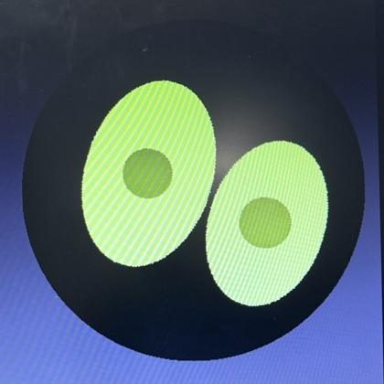
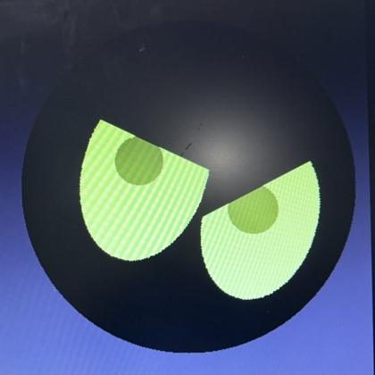
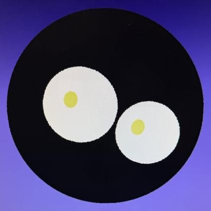
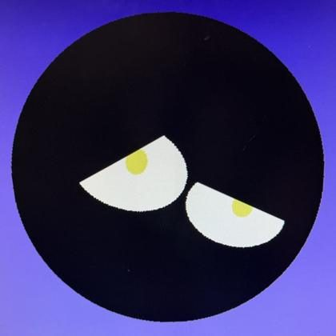
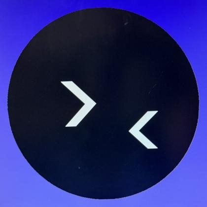
PART 2 · in progress
The ESP32 keychain
Taking Blinkit off the dev board and into something you can carry: an ESP32-S3 with a 1.28" round touch screen, motion sensor, LiPo battery, speaker, and vibration motor, for about $80 in parts.
Designed in Face Lab
A browser simulator I built to design the round-screen face before writing firmware, with 9 eye shapes, 7 pupils, mouths, and 12+ animated moods.
Touch only
Stroke to pet, tap to poke, hold for a round menu. A letter wheel handles naming on the round screen.
Friends over Bluetooth
Two Blinkits can bond with both owners' consent and hatch eggs that mix genes from each parent.
Privacy built in
A "keep to myself" mode turns Bluetooth off entirely.
> face_lab_demo.mp4 // 52 s
Face Lab in action
The keychain's whole interface, designed and tested in my browser simulator before any firmware: moods, petting, the hold-to-open menu, and meeting other Blinkits.
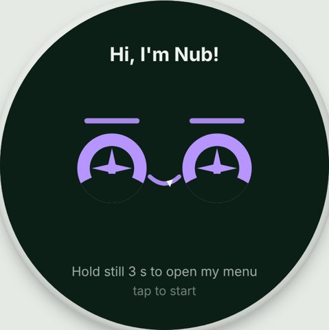
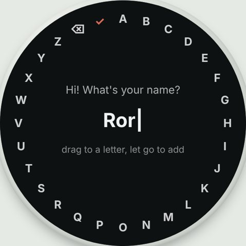
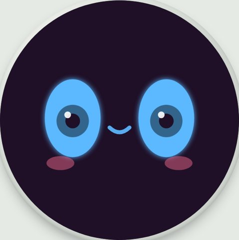
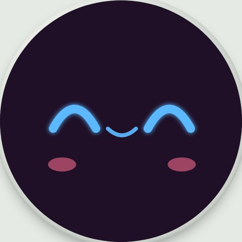
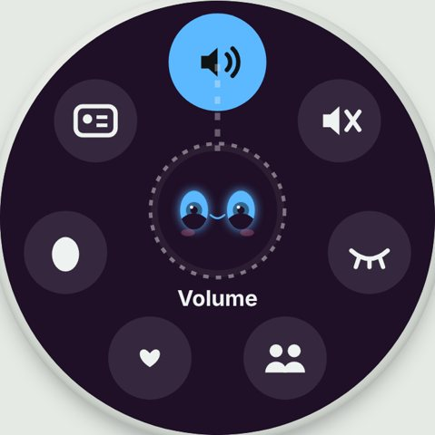
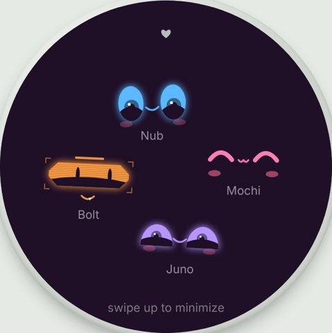
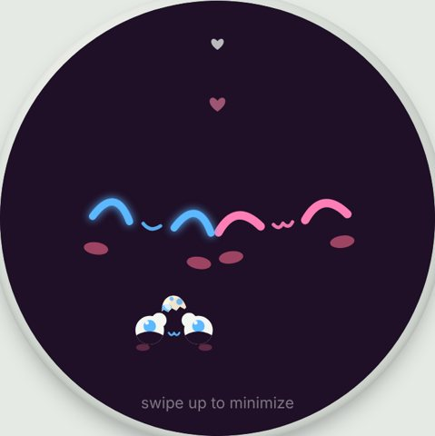
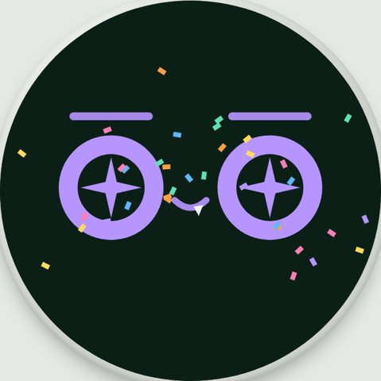
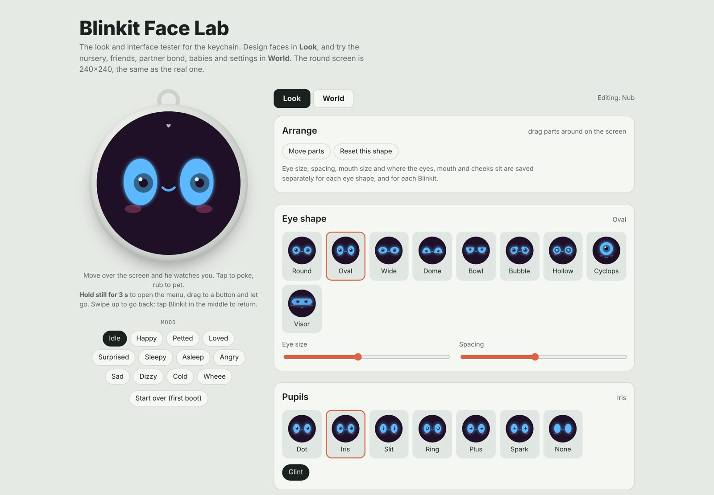
Where it stands
His brain runs on an ESP32 on a breadboard: moods, genes saved to flash, pet, poke, and play buttons, buzzer sounds, and his face on a 16x2 LCD while the round screen is on order.
Next
- Firmware on the round-screen board
- Bluetooth meetups
- 3D-printed case
- Custom PCB in KiCad
> esp32_breadboard.mp4 // 31 s
First firmware on real hardware
The keychain's brain running on an ESP32: three buttons pet, poke, and play with him, a buzzer gives each mood its sound, and a 16x2 LCD shows his face and mood. Same mood rules as the FPGA version, now in C++.
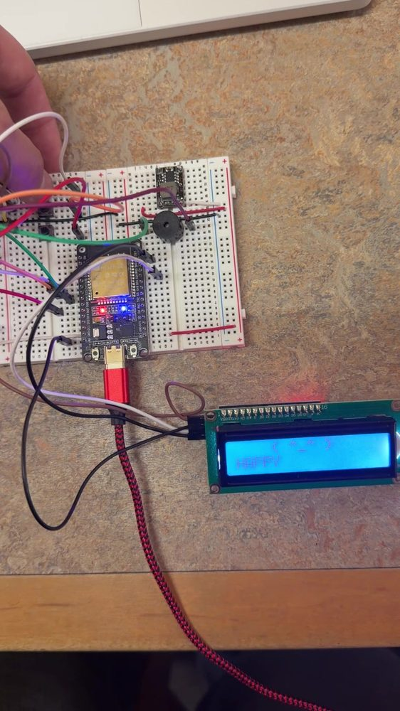
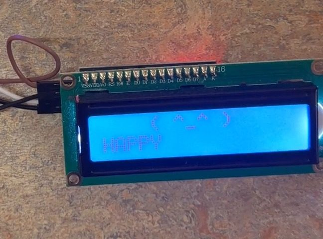